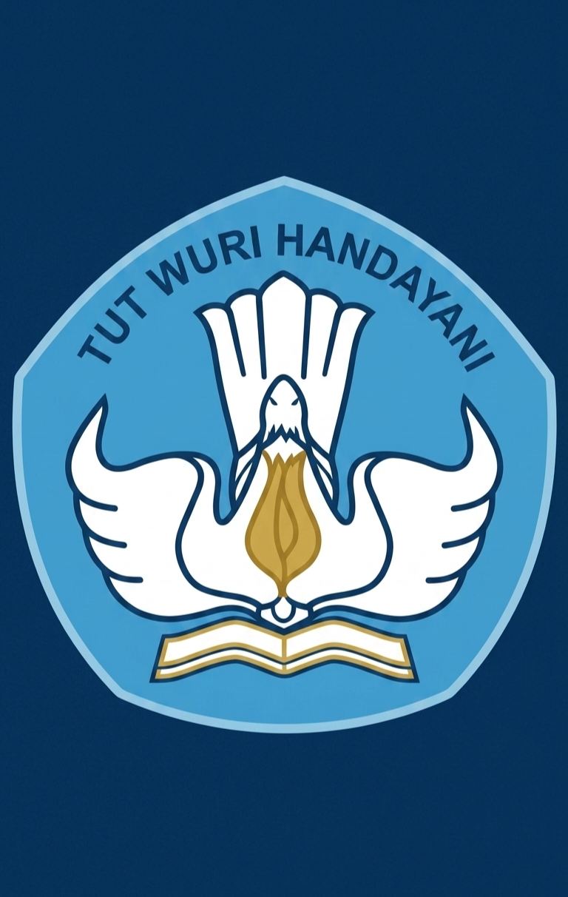
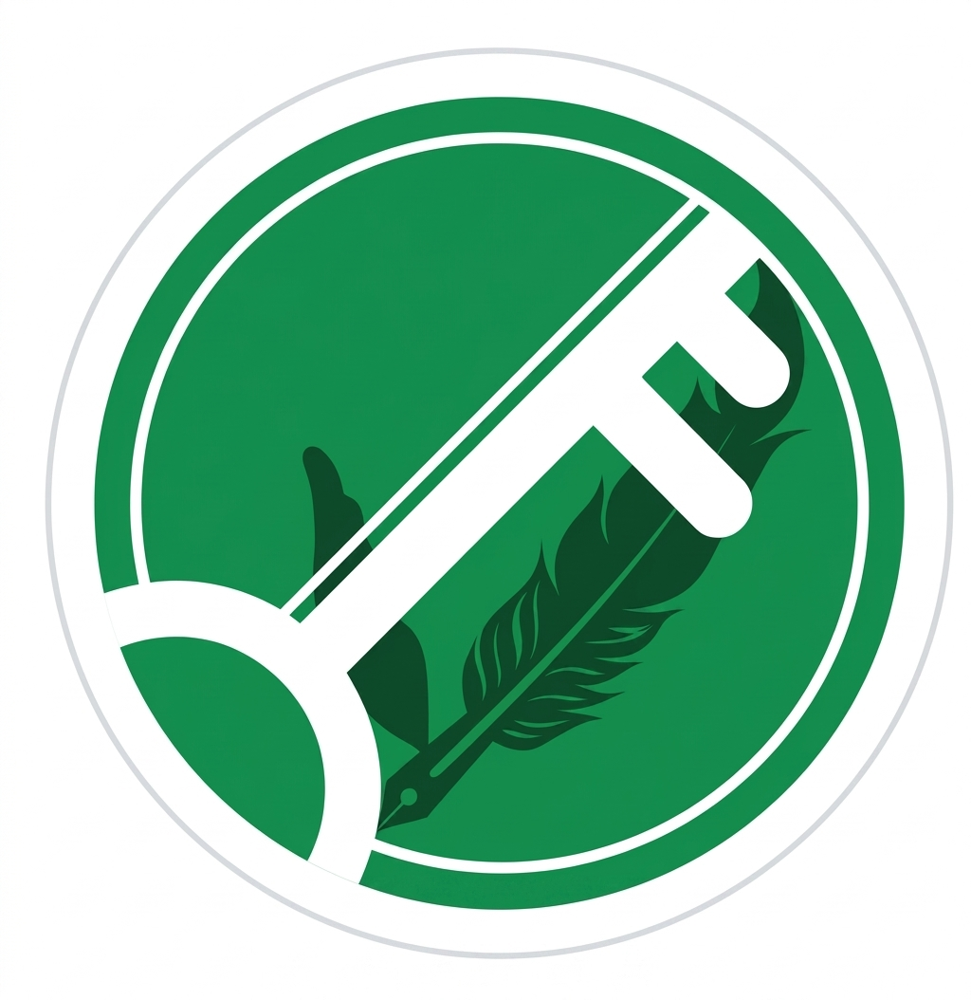

Kementerian Pendidikan, Kebudayaan, Riset dan Teknologi
SISTEM VERIFIKASI IJAZAH ELEKTRONIK
Data ini menyatakan bahwa ijazah dengan nomor tersebut di bawah ini adalah sah dan diterbitkan oleh Universitas Syiah Kuala.
| Nama Lengkap | MUHAMMAD IQBAL |
| Nomor Induk Mahasiswa | 2001102010031 |
| Nomor Ijazah Nasional | 4030120250000845 |
| Program Studi / Jenjang | S1 - Manajemen |
| Tanggal Kelulusan | 6 Januari 2025 |
Dokumen ini telah ditandatangani secara elektronik dengan sertifikat yang diterbitkan oleh BSrE (Badan Siber dan Sandi Negara).
